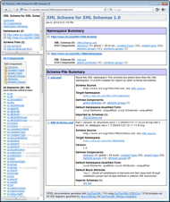

DocFlex/XML - WSDLDoc
- What is DocFlex/XML WSDLDoc?
- Key Features
- Getting Started
- Examples
1. What is DocFlex/XML WSDLDoc?
“DocFlex/XML WSDLDoc” is a powerful WSDL/XSD documentation generator.
It will allow you to document both WSDL and XML schema (XSD) files as well as any interconnections between them,
with the possibility of automatic inclusion of XSD diagrams generated by either
Altova XMLSpy or Oxygen XML Editor.
It is implemented in the form of “WSDLDoc” template set for DocFlex/XML.
|
DocFlex/XML is a software system for development and execution of high quality documentation and report generators
from any data stored in XML files. WSDLDoc is an application of it.
For more details, please see: DocFlex/XML | Overview, Features.
|
We started working on the current version of WSDLDoc yet in 2012.
It was forked from the XSDDoc template set, an implementation of
XML schema documentation generator (which itself has been in development since 2005, along with the entire DocFlex/XML).
Currently, WSDLDoc template set is made of 100 templates
and controlled by more than 700 parameters.
Essentially, it includes the whole XSDDoc as a subset and inherits all its features.
WSDLDoc is based on the standard XML schemas for XSD 1.0 and WSDL 1.1, which drive the data processing:
To date, WSDLDoc is the most complex application of DocFlex Technology, which comes on top of
more than 10 year of experience and work.
2. Key Features
-
Generation of single documentation by any number of WSDL/XSD files together, in particular:
-
Highly navigable framed (Javadoc-like) HTML documentation
-
Single-file HTML documentation 1)
-
RTF documentation 1)
-
|
1) Will be available since version 1.0.0
|
-
Processing of any number of XML schemas (along with WSDL) including:
- In the form of separate XSD files.
-
XML schemas embedded in WSDL (within
<wsdl:definitons>/<wsdl:types> element).
|
Even when the same XML schema (defining the same namespace) is embedded in multiple WSDL files
documented together, all of those instances will be documented correctly. There will be no mess out of it.
|
-
Processing of any referenced WSDL files and XML schemas, in particular:
-
Correct processing of all
<wsdl:import>,
<xs:import>, <xs:include>, <xs:redefine>
elements found across all involved WSDL/XSD files.
|
Including when one embedded XML schema imports another embedded XML schema located in the same WSDL file.
|
-
Automatic loading and processing (i.e. inclusion in the documentation scope) all directly/indirectly referenced
WSDL/XSD files.
|
You just need to specify only the root WSDL/XSD files of your project. Everything referenced from them will be loaded automatically.
|
-
Sophisticated documenting of XSD components (XML schema documentation):
-
Support of any XML schema design patterns imaginable.
-
Possibility of automatic inclusion of XSD diagrams generated by either
XMLSpy or Oxygen XML,
with the support of all diagram hyperlinks.
For more details, please see:
|
The diagrams can be generated for any XML schemas both found in XSD files and embedded in WSDL.
At that, only XSD functionality of either
XMLSpy or Oxygen XML is used.
|
-
IMPORTANT: Since WSDLDoc has been based on “XSDDoc” template set,
all features of XSDDoc are inherited by this template set as well.
For more details, please see: DocFlex/XML | XSDDoc.
-
Documenting of all interconnections between WSDL definitions and XSD components:
-
Hyperlinks from WSDL messages to the details of XSD elements/types describing the message data.
-
In XSD element/type details, the list of all WSDL definitions where they are used.
-
Copy the annotations of XSD elements/types
to the documentation of those WSDL messages (and even operations) where they are used.
-
Possibility of unlimited customization:
-
WSDLDoc is controlled by more than 700 parameters,
which allow you to adjust the generated documentation within huge range of included details.
-
If parameters are not enough, you can modify the templates themselves using the
Template Designer.
-
You can apply also your own CSS styles
to change how the generated documentation looks.
See also:
3. Getting Started
WSDLDoc License
Running WSDLDoc templates requires a
separate license, which you should receive by e-mail.
If you don't have it yet, you can
The license comes as a single 'docflex-xml-wsdldoc.license' file
that should be stored in one of the locations:
In those locations the license file is looked for by default.
Notes:
-
Alternatively, you can specify any other location of your license file directly on the
generator or
template designer command line
using the -license option.
-
Instead of separate WSDLDoc trial, you can
for DocFlex/XML software together.
You will receive a single 'docflex-xml.license' file containing all trial licenses
(including for WSDLDoc). You should install that file in {docflex-xml}/lib/ directory.
Then, you won't need to request separate licenses for any other features
(e.g. template designer, integrations etc.)
you want to try.
How to run WSDLDoc?
Here is a detailed instruction from the very start:
-
Download the DocFlex/XML archive from the
downloads page.
-
Unpack it in some directory, e.g.:
C:\docflex-xml-1.9.5
In further explanations, we shall refer to that directory as '{docflex-xml}'.
-
Obtain and install “DocFlex/XML WSDLDoc”
license as described above.
-
Edit:
{docflex-xml}/generator.bat
to specify the 'JAVA_HOME' variable according
to the location of Java 1.4.x - 8.x installed on your system
(the latest Java version is preferable as it may be the fastest!)
If you don't have one of those Java versions installed on your system, you can freely
download and install the most recent Java Runtime Environment (JRE) version
from Java Technology web-site: http://www.oracle.com/technetwork/java/
-
Run that
generator.bat. You will see the Generator Dialog
like shown on this screenshot:

-
In the “Template” field, select FramedDoc.tpl
main template that generates framed HTML documentation:
{docflex-xml}/templates/WSDLDoc/FramedDoc.tpl
-
In the “XML File(s)” field, specify one or many WSDL/XSD files, by which you want to generate the documentation.
This field must contain one or several file specifications, which may be either:
- local file pathname or pathname pattern
- URL (e.g.
http://www.w3.org/2001/XMLSchema.xsd)
Notes:
-
Multiple file specifications must be separated with spaces.
-
When a file specification contains spaces itself, it must be enclosed in double quotes.
-
You can combine any specification types together.
-
The "pathname pattern" is an Ant-style pattern for local file pathnames. See:
DocFlex/XML | Documentation | Running Generator | ... | Using file pathname patterns.
-
In case of URL, the generator will try to download such a file directly from the Internet (or elsewhere).
This, however, can be redirected using an
XML catalog.
|
-
In the “Output format” field, select HTML.
-
Click “Run” button to start the generation.
|
Once all source WSDL/XSD files are loaded, the generator enters into the estimation phase.
Lots of processing is being done during that, however, you will see only
"Scanning data source, please wait..." message on the progress bar.
On large input data this phase may take some time. Please wait!
After that, the generator passes into the generation phase.
The progress bar will show what's being generated.
You can stop the generator at any time during any phase by clicking <Cancel> button.
|
How to include XSD diagrams?
DocFlex/XML is able to work with any kind of diagrams (i.e. inserting them automatically in the generated output).
That is supported on the level of templates, along with the generation of hypertext imagemaps.
But, currently, DocFlex/XML provides no diagramming engine of its own.
Instead, it includes integrations with two most popular XML editors that do generate XSD diagrams:
Each integration works as follows:
-
It feeds the XML schema file to the given third-party software and forces it (via its open API or command-line options)
to generate its own XML schema documentation, the most simplified one, however with diagrams.
In case of XMLSpy, the generated output is an HTML file + diagram images.
Oxygen XML makes mater even simpler by generating (along with diagram images)
some intermediate XML file (with the known structure) that can be converted further into any kind of documentation.
-
Then, the output produced by the third-party tool is parsed and the diagrams + imagemaps are extracted from it.
-
They are added to the initial XML schema file and fed to templates in some abstract form.
When the XML schema is embedded in WSDL file, it is extracted into a separate temporary XSD file, which is equally processed by the third-party software.
At that, only XSD capabilities of that software are used (no WSDL functionality is required from it).
|
The advantage of such integrations is that when you are the user of one of those XML editors,
you will get in the documentation generated by DocFlex the same diagrams as you see in your XML editor.
Case of XMLSpy
If you have XMLSpy (http://www.altova.com/xmlspy/)
installed on your system, here is how to get the XMLSpy Integration work:
-
Go to the subdirectory:
{docflex-xml}/integrations/XMLSpy/
here '{docflex-xml}' denotes the directory where you installed DocFlex/XML.
-
Find
generator.bat in that directory and edit it to specify:
- Java location (e.g.
c:\Program Files\Java\jre7)
- XMLSpy installation directory (e.g.
c:\Program Files\Altova\XMLSpy2014)
- XMLSpy version (e.g.
2014)
For more details about this, please read the README file found in the same directory:
{docflex-xml}/integrations/XMLSpy/README.html
|
-
Run that
generator.bat.
-
Everything else is the same as described in How to run WSDLDoc.
Notes:
Case of Oxygen XML
If you have Oxygen XML Editor (http://www.oxygenxml.com)
installed on your system, here is how to get the Oxygen XML Integration work:
-
Go to the subdirectory:
{docflex-xml}/integrations/OxygenXML/
here '{docflex-xml}' denotes the directory where you installed DocFlex/XML.
-
Find
generator.bat in that directory and edit it to specify:
- Java location (e.g.
c:\Program Files\Java\jre7)
- Oxygen XML installation directory (e.g.
c:\Program Files\Oxygen XML Editor 16)
For more details about this, please read the README file found in the same directory:
{docflex-xml}/integrations/OxygenXML/README.html
|
-
Run that
generator.bat.
-
Everything else is the same as described in How to run WSDLDoc.
Notes:
4. Examples
eBay Trading API
Xignite Web Services
Microsoft Translator API
XML Schema for XML Schemas 1.0
|  |
|
This demo is intended to show that WSDLDoc can be equally used just as XML schema documentation generator.
The following documentation has been generated directly by the file:
http://www.w3.org/2001/XMLSchema.xsd
The XSD component diagrams generated via the XMLSpy Integration.
Click on the screenshot (on the left) to see the HTML.
|
Copyright© 2014 Filigris Works, Leonid Rudy Softwareprodukte. All rights reserved.
To contact us, please visit
www.filigris.com or e-mail to: contact@filigris.com
")
")